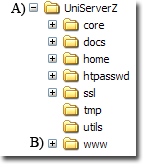
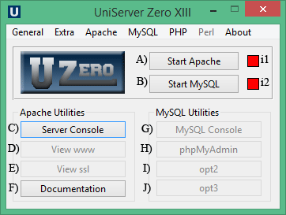
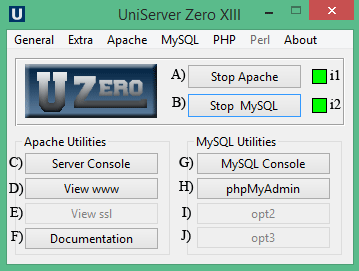

|
|
Quick Start Guide |
The Uniform Server’s default configuration is set to allow only local access; users on your network or the Internet cannot access your server. This allows you to develop and view your website locally in a secure environment.
This guide shows you how to install and run the servers as standard programs. When run as standard programs, nothing is installed to the Windows registry. The servers are therefore fully portable.
Pre-configured server
|
If your are using Uniform Server Zero with pre-installed ZeroModules install as follows:
Alternatively if your are installing a bespoke server follow the next three Install sections and proceed to Installing your Website or Test pages. |
Install - UniController
|
The Uniform Server Zeros base component is the controller application. Download and extract this base component first.
|
 |
Server Paths
You can install The Uniform Server Zero in nearly any location, with the exception that the path to folder UniServerZ must not contain spaces. Do not use "C:\Program Files", for example (which has other problems as well, such as restricted permissions and system restore inconsistencies). We recommend installing to the drive root, such as "C:\" or "D:\" for simplicity, but other locations, such as "C:\test1\appserver" work just as well.
Note: The space character restriction is generic and applies to other WAMP stacks as well. Many applications that will be hosted on the server do not tolerate spaces in paths. The system restore issue applies mainly to individual component installs.
If the current installation is on a faulty path, the situation can eaily be resolved by just moving the UniServerZ directory to a proper location. You do not have to delete the directory and reinstall. For example, just rename "D:\bad path\UniServer" to "D:\good_loc\UniServerZ".
|
General note: UniController on its own allows you to send test e-mails using the email utility msmtp. This utility provides support for PHP plugins allowing the PHP mail function to send emails. In addition the controller provides a menu option to edit or view the UniServer PAC file. Creating an Apache Vhost automatically adds an entry to this file. Entries in the PAC file resolve domain names to local host allowing testing without the need for a DNS entry or writing an entry in the Windows hosts file. The controller also provides a menu option to edit or view the Windows hosts file. Creating an Apache Vhost automatically adds an entry to this file if that user option is enabled (enabled by default). Entries in the hosts file resolve domain names to local host allowing testing without the need for a DNS entry. Greyed out controller menu options and buttons indicate that option is unavailable until either the appropriate plugin is installed or the servers (Apache and MySQL) are running. |

|
Install - Plugins
The Uniform Server Zero is designed for portability, emphasis is given to reducing code size. The Uniform Server Zero achieves this through a modular implementation. Install only plugins you require these are listed on the plugins page, plugins avoid the dreaded bloat-ware scenario.
Installing a plugin
- Close running servers and close UniController.
- Dounload and save required plugin file (ZeroXIII_x_x_x.exe) to folder UniServerZ.
- Execute the downloaded file (ZeroXIII_x_x_x.exe). Once extracted, the plugin is ready to run
- If you wish; delete the installation file.
After extraction plugins have additional documentation in the form of a xxx_read_me.txt file located in folder UniServerZ.
Install WAMP components
The following provides a complete guide for installing a WAMP (Windows Apache MySQL and PHP) server. Installing is a misnomer! Nothing is installed to your PCs registry all files are extracted to their appropriate location within the UniServer folder structure.
To install a WAMP server proceed as follows:
- Download and save the latest controller file (ZeroXIII_controller_2_2_0.exe) to drive c:
- The file is a self-extracting archive, double click on above file to run the extractor.
- A new folder C:\UniServerZ is created containing the controller application UniController.exe and support folders and files.
- Download the following plugins (or latest version) and save to folder UniServerZ.
- ZeroXIII_apache_2_4_23_h.exe - Apache server
- ZeroXIII_mysql_5_6_31.exe - MySQL server
- ZeroXIII_php_7_0_8_h.exe - PHP (Use PHP modules from the Default list)
- ZeroXIII_phpmyadmin_4_6_3.exe - Admin for MySQL server
- For each of the above installation files double click to run the extractor.
- If prompted allow overwriting of existing files.
- If you wish; delete the installation files, they are no longer required.
Note 1: Each plugin contains a read-me file providing any additional instructions this is located in folder UniServerZ.
Note 2: Clean module install
|
Initial installation:
First time installation of modules Modules that have already been installed Module name and folder to delete |
|
General note:
The instructions that follow assume you have installed the above WAMP server or a pre-configured server.
Installing your Website or Test pages
|
Server root folder:
The root folder www already contains a very simple web-site consisting of a single page named index.php |
Before installing your Website, you can delete the index.php file and folders css and images.
Don't delete the .htaccess and favicon.ico files. They have the following purposes:
- .htaccess - This file is part of the server security and should not be deleted.
- favicon.ico - This is a small image file displayed in a browser next to a Web page name.
You can replace this with your own file, but use the name favicon.ico so browsers will display it properly.
Note: Having a favicon image is not a requirement, but modern browsers attempt to load this image by default. If your server does not contain one, an error is logged in Apache's log file.
General notes:
Note 1: Unix installations use a root folder named htdocs. When using an application installation guide that refers to htdocs, use folder www instead.
Note 2: The file structure is not static. For example, running Vhost creates the new folder UniServerZ\vhosts containing Vhost root folders.
Server Control
The UniServerZ folder contains file UniController.exe which opens The Uniform Server's control application for running the servers as a standard program.
Run servers as a Program
UniController runs the servers as a standard program. When using UniController nothing is installed to your operating system's registry. This is ideal for a development server, especially when running from a USB memory stick, since you do not have to perform anything special to stop or remove the servers.
Run UniController:
The Uniform Server's folder structure is shown on the right.
|
Run Servers:
Note 1: Be aware that the splash page is not the index.php file in www. |
 |
General note:
There are various start-up conditions. If you receive a message unable to connect and are provided an option from your browser to try again, wait until all disk activity completes and click the "try again" button. Alternatively, wait a reasonable time to view the initial splash page, and enter the following into your browser: http://localhost/us_splash/index.php
If you do not have the VC14 library, when you attempt to start the servers, you will get a runtime error popup. See VC14 Libraries to resolve this.
Stop the Servers
UniController
Note: Stopping the MySQL server attempts to perform a clean shutdown |
 |
Note: Closing UniController does not change servers’ state. Restarting UniController the current server state is picked up and displayed.
Set New MySQL root password
When UniController is started although you can skip setting a new MySQL root password,
it is highly recommended that you set this password at the first opportunity.
Well! This is the first opportunity; the pop-up allows you to change the current root password.
You can click the cancel button and set the password later. |

|
Note: You can re-open this menu from UniController as follows:
Click MySQL > Change MySQL root password
Root folder www - Test
The root folder www contains a very simple web-site consisting of a single page named index.php and associate folders css and images.
Clicking UniController button View www displays this page confirming that Apache is serving pages from this folder.
View pages
The default server name is localhost. Use this to access pages as follows:
Index PagesTo access index pages (such as index.htm, index.html, index.php) type the following into your browser. http://localhost/ |
Specific pagesDisplay a specific page by appending its name to the server name. For example, if your test page is named test.php, then type the following into your browser: http://localhost/test.php |
Note: The Apache server automatically searches for index pages and displays the first one it finds. If it cannot find an index page, a directory listing is displayed instead.
Where to go next
This quick guide shows how to start and stop the servers and display a test page. You can copy an entire web-site into the root folder www and it will then be served by Apache.
How to put the servers on-line - Open up your server for public or intranet access and optionally restrict access using a name and password.